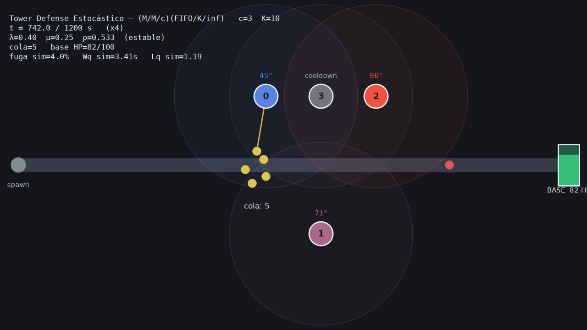

Tower Defense
Estocástico
Un juego usado como banco de pruebas de un sistema de colas: modelado M/M/c, simulado con SimPy y reproducido en Godot 2D. El objeto de estudio es el modelo, no el juego.


Cómo defendemos
la base.
Presentación descontracturada — intervenimos cuando haga falta. Al final, demo en vivo sobre el propio Tower Defense.
Defender la base
de oleadas.
- Enemigos avanzan por un camino hacia una base.
- Una zona con c torres los ataca; si están ocupadas, esperan en cola.
- Si la zona está llena, el enemigo se fuga y daña la base.
- El entregable es la validación del modelo, no el juego.
…un sistema
de colas.
| Tower Defense | Teoría de Colas |
|---|---|
| Enemigo | Cliente / transacción |
| Torre | Servidor (canal) |
| Disparar hasta matar | Tiempo de servicio |
| Enemigos esperando | Cola (FIFO) |
| Fuga a la base | Bloqueo (cola llena) |
( FIFO / K / ∞ )
- M · llegadas y servicio exponenciales (markoviano)
- c · torres (servidores) · K · capacidad → habilita la fuga
Aleatorias, continua y de control.
- Tiempo entre arribos ~ Exp(λ)
- Tiempo de servicio ~ Exp(μ)
- (ext.) tipo de enemigo — discreta
- Cada torre se calienta al disparar (rampa)
- y se enfría al descansar (ley de Newton)
- Es el elemento del juego y la variable continua del TP
- λ, μ, c, K · semilla
- Umbrales térmicos
- Salida: Lq, Wq, ρ, tasa de fuga
Ley de Little como control de consistencia: L = λ·W y Lq = λ·Wq
Aleatoriedad
reproducible.
- Generador congruencial: X₍ᵢ₊₁₎=(a·Xᵢ+C) mod m
- Uniforme · independiente · reproducible (semilla) · período amplio
- La simulación usa Mersenne Twister + transformada inversa
- Streams independientes: arribos / servicio / tipo → números aleatorios comunes
El calor rompe
la fórmula.
- Cola FIFO con simpy.Store; cada torre es un proceso que la consume
- Capacidad K finita: el que llega con el sistema lleno se fuga (bloqueo)
- Temperatura integrada en forma cerrada por tramos → corre en HW modesto
- Torre sobrecalentada entra en cooldown y no atiende → cae la capacidad efectiva
La temperatura rompe el supuesto markoviano (c servidores siempre disponibles). Las fórmulas son una cota; la simulación captura el comportamiento real.
Mirá las torres pasar de azul a rojo y apagarse en cooldown.

Analítico vs. simulado.
| Métrica | Analítico | Simulado |
|---|---|---|
| Wq [s] | 0.74 | 3.41 |
| Lq | 0.30 | 1.19 |
| L | 1.89 | 2.63 |
| Fuga (Pb) | 0.16 % | 4.0 % |
Ley de Little verificada · error ≈ 1.2 % → el modelo es consistente.
Sin temperatura, sim ≈ analítico (engine validado). Con temperatura, la brecha mide su efecto.


Más torres
≠ mejor.
- ΔLq por torre ≈ 2.53 → 0.25 → 0.05 → 0.01
- Pasado el óptimo, las torres quedan ociosas (ρ→0)
El costo dibuja
una U.
- Sumar una torre conviene mientras el ahorro en fugas supere su costo
- Dimensionar a c*, no al máximo: sobre-proveer desperdicia capacidad
Agregá y sacá torres y mirá cómo cambian cola y fugas en vivo.

Confianza y oleadas.


Dimensionar al pico, no al promedio. Lanzamos una oleada en vivo y vemos la cola saturarse y la base caer si faltan torres.

Reasignar,
no eliminar.
- El débil espera más; el Wq total casi no cambia (work-conserving)
- La fuga no cambia: es por bloqueo de capacidad, no por espera
- Tipos de enemigo: a igual media, más varianza ⇒ más fuga (Pollaczek-Khinchine)
Tres piezas, un contrato.
Fuente de verdad: modelo, ecuaciones y el contrato de datos.
Módulo A (simulación) + B/B+ (análisis). Exporta output.json.
Lee el JSON e interpola en 2D. Cero cálculo.
- Python hace toda la matemática offline; Godot solo reproduce → corre en Ubuntu de bajos recursos
- El output.json v1.0 es el único punto de acoplamiento — auto-auditado (8 invariantes)
- Documentación como LLM-Wiki: schema, índice, log, fuentes integradas y síntesis evolutiva

Godot 2D.
- Lee output.json e interpola la línea de tiempo
- Torres azul→rojo según temperatura; gris en cooldown
- Export web (HTML5/PWA) para hostear gratis
Demo en vivo sobre el propio Tower Defense.
Demo
en vivo.
▶ DEMO EN VIVO
Corremos el Tower Defense y miramos el modelo respirar. Esto es lo que hay que mirar:
Las torres pasan de azul a rojo y entran en cooldown.
Los enemigos se encolan (FIFO) cuando no hay torre libre.
Si la zona se llena, el enemigo se fuga y la base pierde vida.
El botín.
Hay un c_min para ρ<1; debajo, la fuga es masiva.
La 1ª torre aporta ~89%; el óptimo es c*=3, no el máximo.
Rompe M/M/c y sube la fuga: por eso se simula.
Con oleadas, c se elige por el pico de λ(t), no el promedio.
Priorizar al fuerte baja su espera (cμ); no cambia la fuga.
Mejor enfriamiento recupera capacidad más barato que una torre.
¡Gracias!
Defendemos el modelo, no el juego — pero el juego lo hace divertido. Vamos a la demo en vivo.